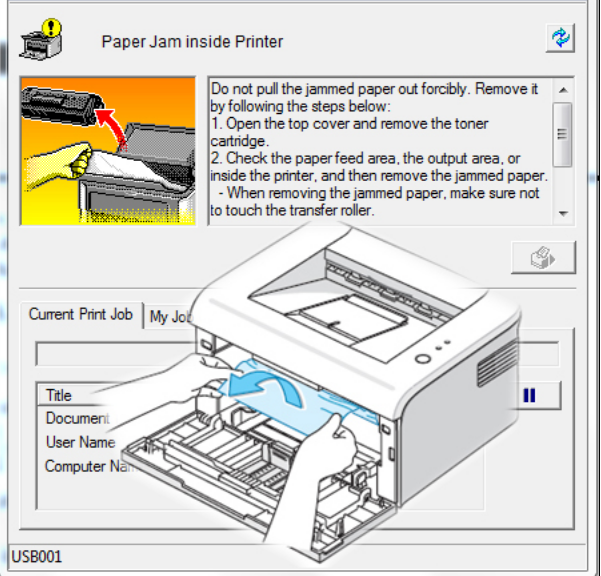
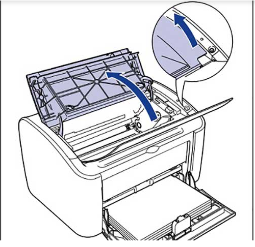
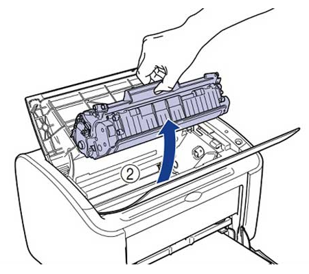
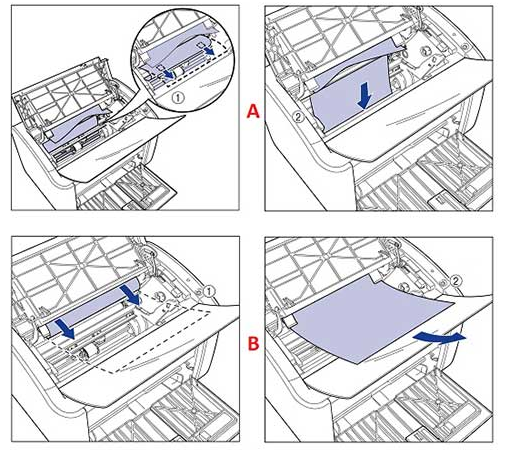

Giải Pháp Khắc Phục Máy In Canon Bị Kẹt Giấy
Máy in canon bị kẹt giấy liên tục là hiện tượng rất phổ biến và dễ gặp phải khi sử dụng máy in. Đặc biệt là với những doanh nghiệp, văn phòng hay cá nhân có tần suất sử dụng máy in liên tục. Tuy nhiên, để sửa chữa hiện tượng kẹt giấy không phải là điều quá khó khăn, chỉ cần hiểu rõ nguyên nhân và cách xử lý bạn hoàn toàn có thể tự khắc phục những hiện tượng kẹt giấy đơn giản mà không cần đến sự trợ giúp của các chuyên gia kỹ thuật.
Hôm nay, mực in Trường Phát sẽ hướng dẫn các bạn cách kiểm tra nguyên nhân và cách khắc phục hiện tượng kẹt giấy trên máy in Canon 2900 vì đây là một trong những chiếc máy in được sử dụng phổ biến tại hầu hết các văn phòng. Với những chiếc máy in khác, các bạn cũng có thể tham khảo để tìm kiếm nguyên nhân và cách xử lý hiện tượng kẹt giấy cho chiếc máy in của mình.

Nguyên nhân lỗi máy in canon bị kẹt giấy
- Giấy kém chất lượng, giấy quá mỏng.
- Để giấy in không ngay ngắn, lệch khay.
- Giấy bị ẩm gây dính liền nhau gây nên bị kẹt giấy.
- Sensor tách giấy trên máy in bị hỏng.
- Bao lụa, lô sấy của máy in bị rách do quá trình sử dụng bị vật cứng chọc vào.
- Đôi khi do in số lượng lớn lên đến vài trăm tờ cũng rất dễ bị kẹt.
- Máy bẩn, mực cặn lại bên trong không vệ sinh
Tác hại của việc lấy giấy không đúng cách
- Dễ làm hỏng lô sấy, bao lụa dẫn dến việc in luôn luôn bị rách, nát.
- Dễ làm hỏng Sensor tách giấy trên máy in
- Hộp mực cũng có khả năng bị hỏng nếu lấy giấy không đúng cách.
- Máy in sẽ có một vài bộ phận bị hỏng nếu cố tính lấy giấy, kéo giấy.
Cách khắc phục máy in bị kẹt giấy liên tục
Bước 1: Tắt hoàn toàn máy in. Thao tác này giúp máy in nguội hẳn phần cơ và phần sấy bên trong máy. Để xác định nguyên nhân kẹt giấy do bộ phận nào cần tháo máy in và kiểm tra vì vậy tắt máy in là việc đầu tiên cần làm đồng thời giảm nhiệt cho bộ phận lô sấy.

Bước 2: Mở nắp máy in, rút cartridge (hộp mực) ra khỏi máy nhẹ nhàng.

Bước 3: Tiếp đến bạn kéo tờ giấy bị kẹt ra theo chiều ra của giấy khi in, tránh kéo ngược làm giấy bị rách. Và nếu bạn đang cố lôi một mảnh giấy bị kẹt bên trong máy in laser, bạn không muốn bộ phận sấy (fuser) sinh thêm nhiệt.

Chú ý: Nếu giấy bị kẹt ở ngay hay gần bộ phận này, hãy đợi nó nguội hẳn rồi lôi ra nhé, nếu lôi ra rôi mà vẫn báo kẹt giấy thì bạn kiểm tra thật kỹ 1 lần nữa coi có những mẩu giấy nhỏ xíu bị rách nằm đâu đó trên đường đi của máy in không nhé (hãy tháo hay mở khay nạp giấy và lần theo đường nạp đến khay giấy ra, mở hết các nắp bạn thấy).
Bước 4: Lắp cartridge (hộp mực) vào và bật lại máy in
Khởi động lại máy in, nếu máy báo còn kẹt giấy cần kiểm tra lại xem còn giấy vụn bên trong máy không. Nếu bạn không chắc chắn thao tác của mình là đúng thì lúc này nên gọi bên chuyên sửa chữa máy in để được hỗ trợ tốt nhất, đảm bảo cho máy in trở lại hoạt động bình thường.
Lưu ý
- Với những lọai máy in có cửa sau (canon 3300…) thì bạn nên mở cửa sau để lấy giấy dễ dàng hơn.
- Nếu giấy bị cuốn vào lô sấy, bạn phải dùng nhíp để gắp từng góc giấy lôi ra ngòai. Chú ý kéo nhẹ nhàng, từ từ để tránh rách giấy. Đặc biệt, không nên chạm vào các linh kiện khác của máy.
Còn trong trường hợp máy in bị nhòe, mực in trên các bản giấy bị nhòe mà không phải là do mới thay mực thì bạn nên tham khảo ngay cách sửa lỗi máy in bị nhòe mực của chúng tôi để biết cách sửa lỗi.
Máy in bị lem mực cũng là một vấn đề đau đầu với các nhân viên văn phòng, khi gặp lỗi máy in bị lem mực, văn bản khi in ra của bạn sẽ có màu đen gạch chi chi lên tờ giấy hoặc không sẽ là đen hẳn, cách sửa lỗi máy in bị lem mực đã được mực in Trường Phát hướng dẫn khá chi tiết, nếu quan tâm, các bạn có thể đọc qua cách sửa lỗi máy in bị lem mực để có thêm kiến thức cho mình.
Cần nạp mực hoặc sửa máy in tận nơi? Mực In Trường Phát có mặt trong 30 phút tại TP.HCM — in test trước khi tính tiền, bảo hành 1 tháng.
0908.327.123 · 0819.007.394 (Zalo cả 2 số)